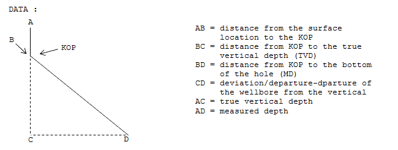

Directional Survey Calculations
The following are the two most commonly used methods to calculate directional surveys :
- Angie Averaging Method
- Radius of Curvature Method

Where, MD = course length between surveys in measured depth (ft)
Il,I2 = inclination (angle) at upper and lower surveys, degrees
A1,A2 = direction at upper and lower surveys
Case : Use the Angle Averaging Method and Radius of Curvature
Method to calculate the following surveys :
|
|
Survey 1 |
Survey 2 |
|
Depth (ft) |
7482 |
7782 |
|
Inclination (degrees) |
4 |
8 |
|
Azimuth (degrees) |
10 |
35 |
Angle Averaging Method :
Radius of Curvature Method :
DEVIATION/DEPARTURE CALCULATION
Deviation is defined as departure of the wellbore from the vertical, measured by the horizontal distance from the rotary table to the target. The amount of deviation is a function of the dril angle (inclination) and hole depth.
The following diagram illustrates how to determine the deviation/departure:

To calculate the deviation/departure (CD), ft :
CD (ft) = sin I x BD
Case : Kick off point (KOP) is a distance ft from the surface.
MD is ft. Hole angle (inclination) is degrees.
Therefore the distance from KOP to MD = ft (BD):
From this calculation, the measured depth (MD) is ft away from vertical.
DOGLEG SEVERITY CALCULATION
Method 1
Dogleg severity (DLS) is usually given in degrees/100 ft. The following formula provides dogleg severity in degrees/100 ft and is based on the Radius of Curvature Method :
DLS = (cos-1 [(cos I1 x cos I2) + (sin I1 x sin I2) x cos (A2 – A1)]x
For metric calculation, substitute x
Where, DLS = dogleg severity, degrees/100 ft
CL = course length, distance between survey points (ft)
I1, I2 = inclination (angle) at upper and lower surveys (ft)
Al, A2 = direction at upper and lower surveys, degrees
Azimuth = azimuth change between surveys, degrees
Case :
|
|
Survey 1 |
Survey 2 |
|
Depth (ft) |
4231 |
4262 |
|
Inclination (degrees) |
13.5 |
14.7 |
|
Azimuth (degrees) |
N 10 E |
N 19 E |
DLS = (cos-1 [(cos 3.5xcos 14.7) + (sin 13.5xsin 14.7) x cos (19 - 10)]x
= (cos-1 [(.9723699 X .9672677)+(.2334453 x .2537579 x .9876883)]) x
= (cos-1 [(.940542) + (.0585092)]) x
= 2.4960847 x
= 8.051886 degrees/100 ft
Method 2
This method of calculating dogleg severity is based on the tangential method :
Where, DLS = dogleg severity, degrees/100 ft
L = course length, ft
I1, I2 = inclination (angle) at upper and lower surveys, degrees
Al, A2 = direction at upper and lower surveys, degrees
Case :
|
|
Survey 1 |
Survey 2 |
|
Depth (ft) |
4231 |
4262 |
|
Inclination (degrees) |
13.5 |
14.7 |
|
Azimuth (degrees) |
N 10 E |
N 19 E |
AVAILABLE WEIGHT ON BIT IN DIRECTIONAL WELLS
A directionally drilled well requires that a correction be made in total drill collar weight because only a portion of the total weight will be available to the bit :
P = W x Cos I
Where, P = partial weight available for bit
Cos = cosine
I = degrees inclination (angle)
W = total weight of collars
Case : W = lb
I = degrees
Thus, the available weight on bit is lb.
DETERMINING TRUE VERTICAL DEPTH
The following is simple method of correcting for the TVD on directional wells. This calculation will give the approximate TVD interval corresponding to the measured interval and is generally accurate enough for any pressure calculations. At the next surey, The TVD should be corrected to corespond to the directional driller’s calculated true vertical depth :
TVD2 = cos I x CL + TVD1
Where, TVD2 = new true vertical depth (ft)
Cos = cosine
CL = course length – number of feet since last survey
TVD1 = last true vertical depth (ft)
Case : TVD (last survey) = ft
Deviation angle = degrees
Course length = ft